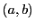

Next: Builtin Objects and Methods Up: Yet Another Lisp Interpreting Previous: Concepts
Yalie contains only three literal objects: integers, symbols, and lists. Integers are written literally. Symbols are written as any string of characters (other than those defined as punctuation in this section) that is not an integer. Lists are written as a sequence of whitespace-separated literals enclosed by matching parentheses. We can define the parsing function as taking for arguments a code snippet and an initial store, and returning an updated store and the number referring to the newly created object in that store.
Integers are parsed as
Symbols are parsed as
Finally, lists are parsed into ``cons'' objects, as is traditional for Lisp languages. The data element of these cons objects will be an ordered pair of the form , and they will be linked together to form linked lists terminated in a ``nil'' object.
In addition to these literals, we define some extra translational syntax for convenience. Message passing is invoked by the expression (msg foo msgForFoo [args...]), so we allow the period operator to translate into that S-expression. We let a.b translate to (msg a b) and (a.b c d...) translate to (msg a b c d...). When there are multiple consecutive infixed objects at the front of an S-expression, we evaluate from left to right and allow the final infix to capture the expression. Thus (a.b.c d e) translates to (msg (msg a b) c d e). We also define the single quote as a prefix operator that takes precedence over the period, and we translate `a to (quote a). Both msg and quote will be defined below.
Jack O'Connor 2009-05-04